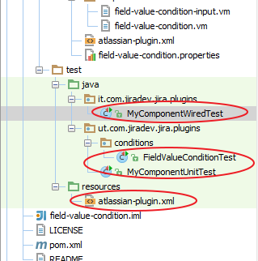
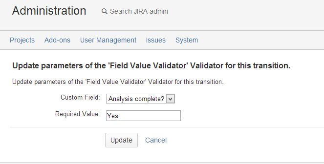
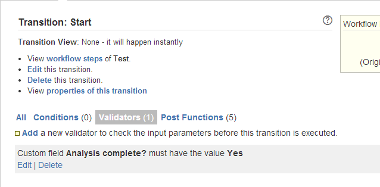

Requirement: Write a workflow validator to check if a selected custom field has the value set to Yes.

Your project now contains 4 new files. We will be modifying each of these files to implement our logic and display content we want to display.
Take a look at the code in the files here. You will see a lot of similarity between the code we wrote for the workflow condition and the workflow validator.
package com.jiradev.jira.plugins.validators;
import com.atlassian.core.util.map.EasyMap;
import com.atlassian.jira.component.ComponentAccessor;
import com.atlassian.jira.issue.fields.CustomField;
import com.opensymphony.workflow.loader.AbstractDescriptor;
import com.opensymphony.workflow.loader.ValidatorDescriptor;
import com.atlassian.jira.plugin.workflow.WorkflowPluginValidatorFactory;
import com.atlassian.jira.plugin.workflow.AbstractWorkflowPluginFactory;
import java.util.Map;
public class FieldValueValidatorFactory extends AbstractWorkflowPluginFactory implements WorkflowPluginValidatorFactory
{
protected void getVelocityParamsForInput(Map velocityParams)
{
//the default message
velocityParams.put("customFields", ComponentAccessor.getCustomFieldManager().getCustomFieldObjects());
}
protected void getVelocityParamsForEdit(Map velocityParams, AbstractDescriptor descriptor)
{
getVelocityParamsForInput(velocityParams);
getVelocityParamsForView(velocityParams, descriptor);
}
protected void getVelocityParamsForView(Map velocityParams, AbstractDescriptor descriptor)
{
if (!(descriptor instanceof ValidatorDescriptor))
{
throw new IllegalArgumentException("Descriptor must be a ValidatorDescriptor.");
}
ValidatorDescriptor validatorDescriptor = (ValidatorDescriptor) descriptor;
String customFieldId = validatorDescriptor.getArgs().get("selectedCustomField").toString();
CustomField customField = ComponentAccessor.getCustomFieldManager().getCustomFieldObject(customFieldId);
velocityParams.put("requiredValue", validatorDescriptor.getArgs().get("requiredValue"));
velocityParams.put("selectedCustomField", validatorDescriptor.getArgs().get("selectedCustomField"));
velocityParams.put("selectedCustomFieldName", customField.getName());
}
public Map getDescriptorParams(Map validatorParams)
{
// Process The map
String requiredValue = extractSingleParam(validatorParams, "requiredValue");
String selectedCustomField = extractSingleParam(validatorParams, "selectedCustomField");
return EasyMap.build("requiredValue", requiredValue,"selectedCustomField",selectedCustomField);
}
}
We will now setup the view where the user selects the custom field and enters a value that is required for the condition to pass.
<tr>
<td class="fieldLabelArea">
Custom Field:
</td>
<td nowrap>
<select name="selectedCustomField" id="selectedCustomField">
#foreach($customField in $customFields)
<option name="$customField.getId()" id="$customField.getId" value="$customField.getId()"
#if($customField.getId() == $selectedCustomField)
selected
#end
>$customField.getName()</option>
#end
</select>
</td>
</tr>
<tr>
<td class="fieldLabelArea">
Required Value:
</td>
<td nowrap>
<input name="requiredValue" id="requiredValue" value="${textutils.htmlEncode($requiredValue)}" />
</td>
</tr>
The code above is responsible for rendering the below screenshot.

Custom field <b>$selectedCustomFieldName</b> must have the value <b>$requiredValue</b>
The code above is responsible for rendering the below screenshot.

package com.jiradev.jira.plugins.validators;
import com.atlassian.jira.component.ComponentAccessor;
import com.atlassian.jira.issue.fields.CustomField;
import org.slf4j.Logger;
import org.slf4j.LoggerFactory;
import com.atlassian.jira.issue.Issue;
import com.opensymphony.module.propertyset.PropertySet;
import com.opensymphony.workflow.Validator;
import com.opensymphony.workflow.InvalidInputException;
import java.util.Map;
public class FieldValueValidator implements Validator
{
public void validate(Map transientVars, Map args, PropertySet ps) throws InvalidInputException
{
String selectedCustomField = (String) args.get("selectedCustomField");
String requiredValue = (String) args.get("requiredValue");
Issue issue = (Issue) transientVars.get("issue");
CustomField customField = ComponentAccessor.getCustomFieldManager().getCustomFieldObject(selectedCustomField);
Object value = issue.getCustomFieldValue(customField);
if(value==null)
{
throw new InvalidInputException(ComponentAccessor.getCustomFieldManager().getCustomFieldObject(selectedCustomField).getName() + " must contain the value '" + requiredValue + "'.");
}
else
{
if(!value.toString().equals(requiredValue))
{
throw new InvalidInputException(ComponentAccessor.getCustomFieldManager().getCustomFieldObject(selectedCustomField).getName() + " must contain the value '" + requiredValue + "'.");
}
}
}
}
Show your support by tweeting about this tutorial. Is Jiradev something you would reommend? Let me know.
Do you have a Jira plugin tutorial that can be used on this site? Please do share it with me and I can add it along with the ones available.
Your feedback can help improve the content on this site. If you have anything that you would like me to change/implement on the site.